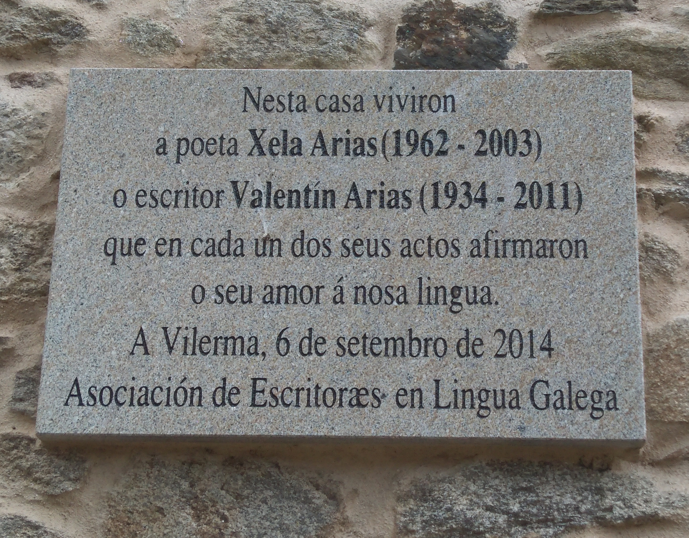
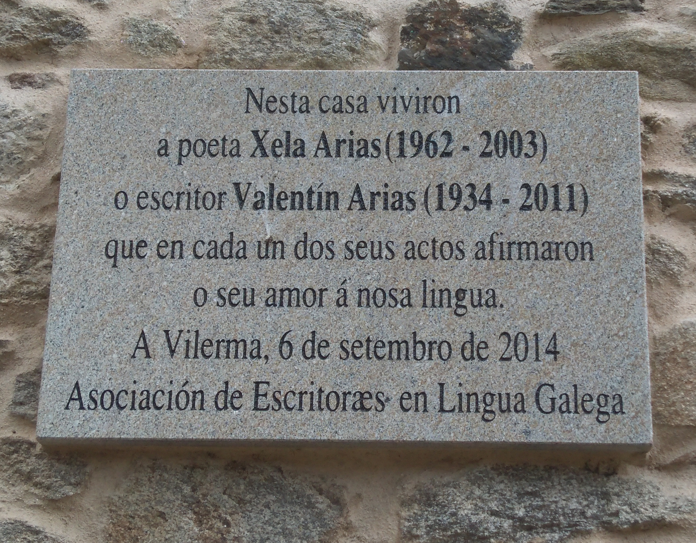
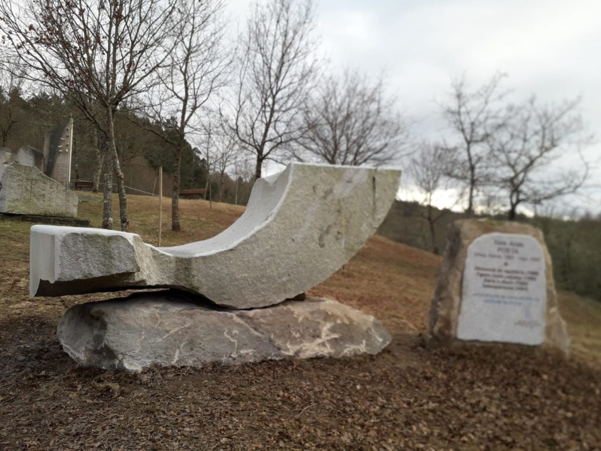
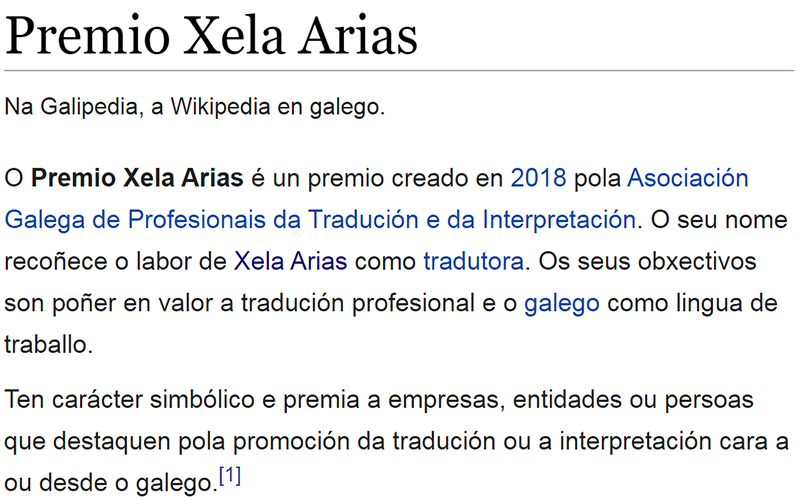
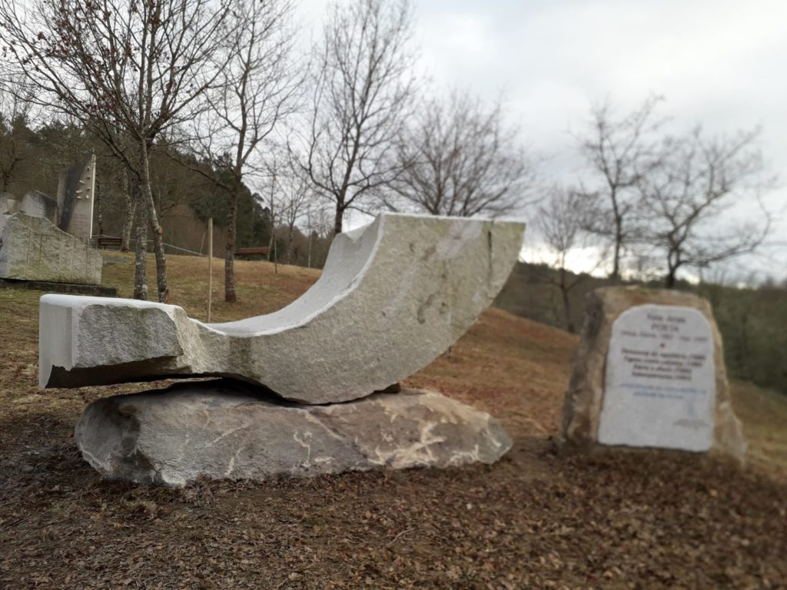
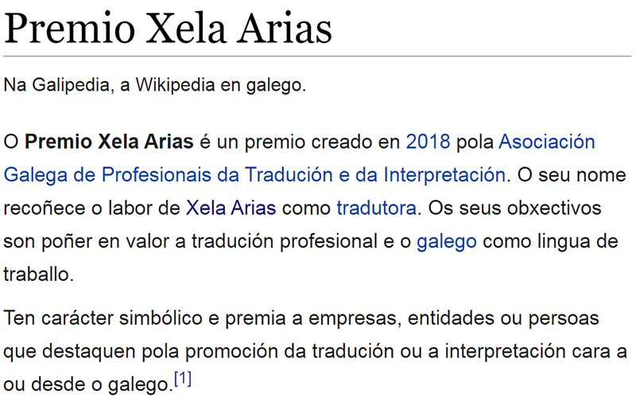

Acaso sexa a declaración que sostén con máis clara rotundidade a postura vital e literaria de Xela Arias. Un inconformismo creativo e solidario que, desde a lucidez dunha mente en rebeldía, despregou ao longo de corenta e un anos de vida a paixón da palabra na súa máis depurada independencia, en cada un dos seus actos poéticos, culturais e cívicos. Por ser exactas, ela dixo:
 

 


